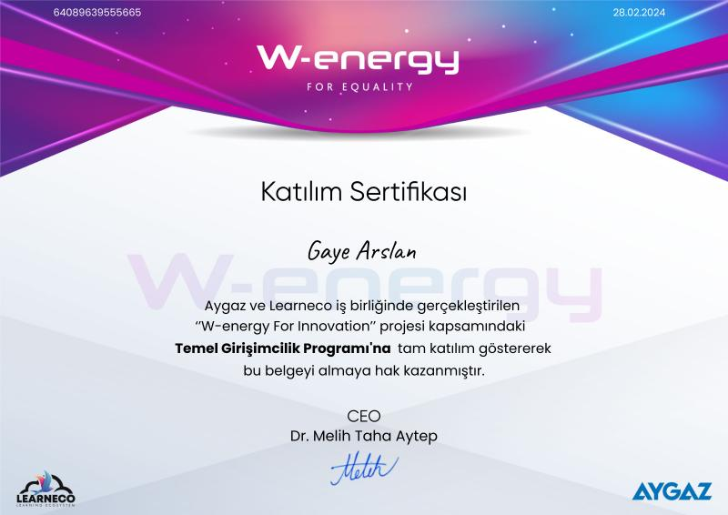
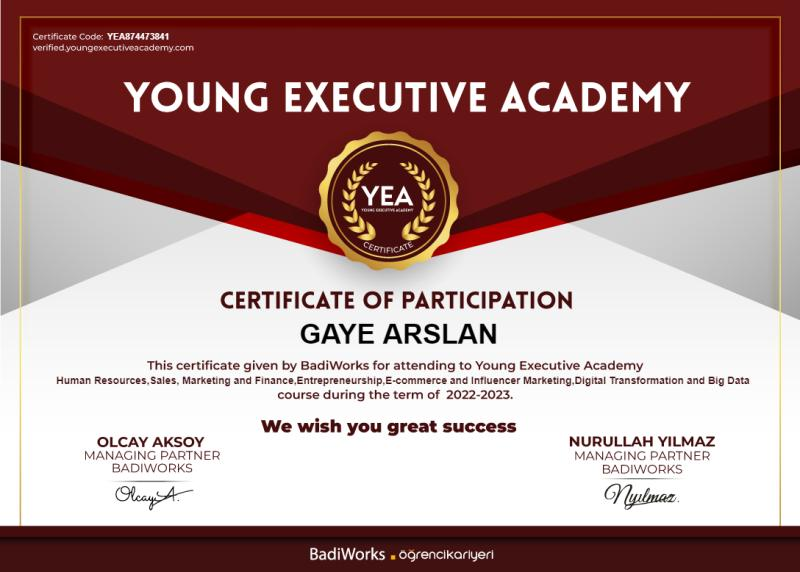
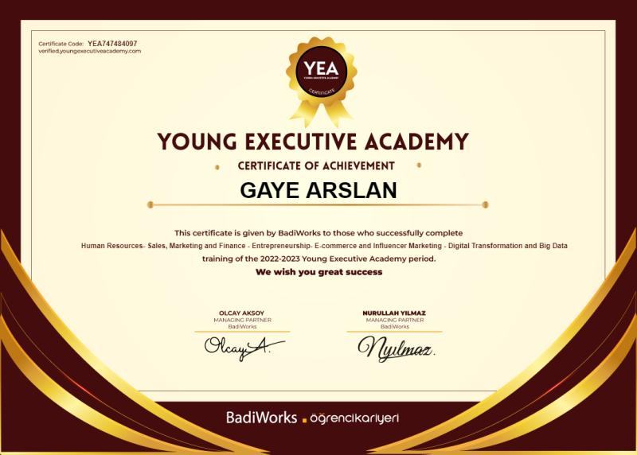
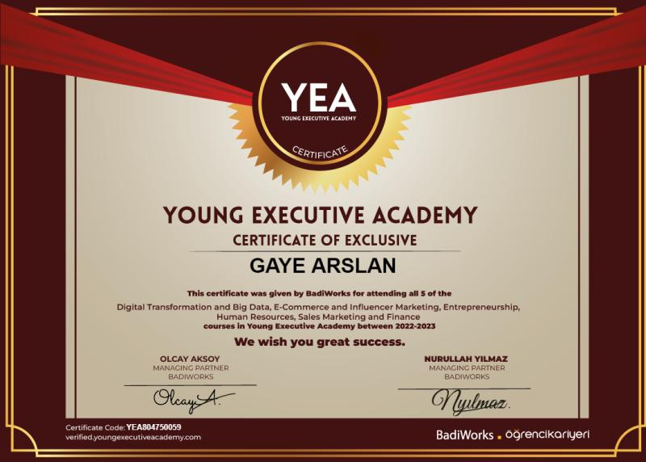
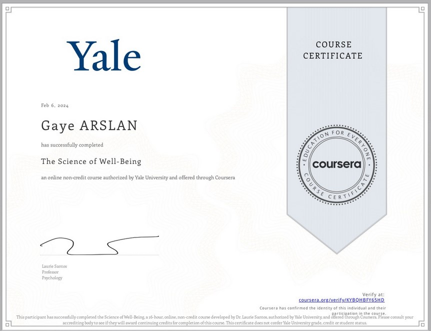
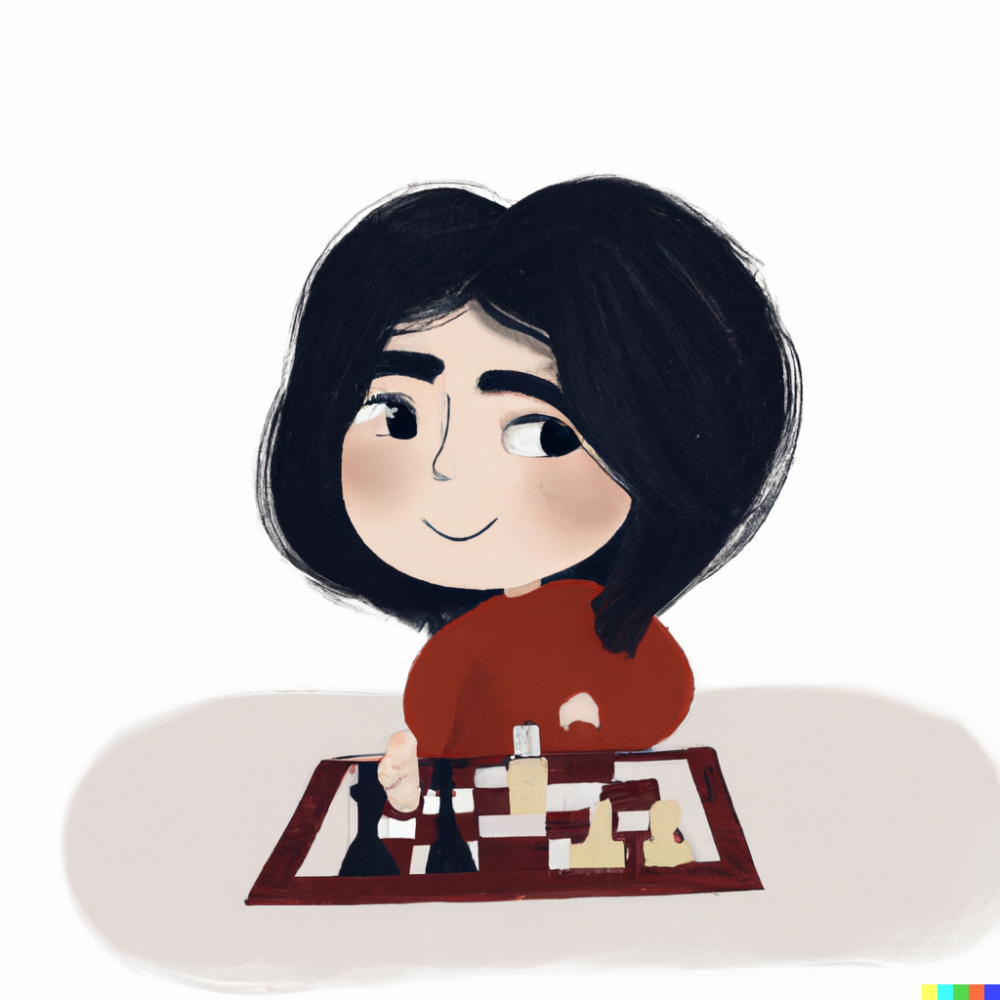

Hakkımda:
Ben Gaye. Konya Teknik Üniversitesi'nde Bilgisayar Mühendisliği 1.sınıf öğrencisiyim. Yazılım alanında çeşitli projeler yaptım. Geçen sene Huawei Kodlama Maratonunda takım arkadaşlarımla birlikte güneş panelerindeki anomalileri yapay zeka yardımıyla tanımlayabilen SolInspect adlı bir web sitesi geliştirdik. Ayrıca Global Ai Hub ve Akbank işbirliğiyle düzenlenen Python Bootcamp'de Kütüphane Yönetim Sistemi projemi gerçekleştirdim. Kodlamanın yanı sıra girişimcilik, iletişim gibi soft skills konularında da çeşitli etkinliklere katılarak kendimi geliştiriyorum. Piyano çalmak ve satranç oynamak boş zamanlarımda yapmaktan hoşlandığım etkinlikler. Her gün öğrenmeye, hayat boyu öğrenmeye çabalıyorum.
Projelerim:
SolInspect / Huawei Kodlama Marathonu
Projem Hakkında Detaylı Bilgi için Tıklayınız.Kütüphane Yönetim Sistemi / Python Bootcamp
Projem Hakkında Detaylı Bilgi için Tıklayınız.Katıldığım Etkinlikler
Temel Girişimcilik Programı
Koç Holding A.Ş. grup şirketler bünyesinde yer alan Aygaz A.Ş. ve LEARNECO | Learning Ecosystem ile beraber gerçekleştirilen W-Energy for Innovation projesi kapsamında Temel Girişimcilik Programı'nda iki gün boyunca öz liderlikten, takım dinamiklerine; asansör konuşmalarından, girişimciliğe; tasarım odaklı düşünme modeline kadar birçok konuda eşsiz bir deneyim yaşadım. Bu deneyim, sadece bilgi edinmekle kalmadı, aynı zamanda yeni bağlantılar kurma ve ilham alma fırsatı da sundu. Gelecekteki girişimlerim için motive oldum ve daha güçlü adımlar atmaya hazır hissediyorum.
Young Executive Academy
  Sektörün devleriyle bir araya geldiğimiz etkinlikte teknolojinin geleceği hakkında yeni bilgiler öğrenip network ağımı genişletme fırsatı buldum.
The Science of Well Being / Yale Üniversitesi
Yale Üniversitesi'nin düzenlediği 10 haftalık mutluluk kursunda hayata farklı bakış açılarından bakabilmeyi öğrendim.
Hobilerim
Piyano çalmaktan ve satranç oynamaktan hoşlanıyorum.
